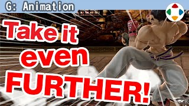
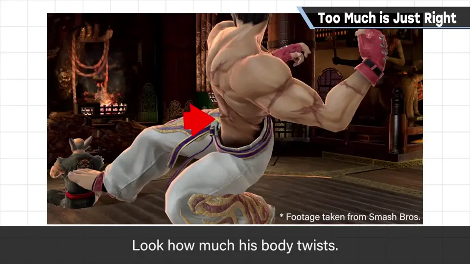
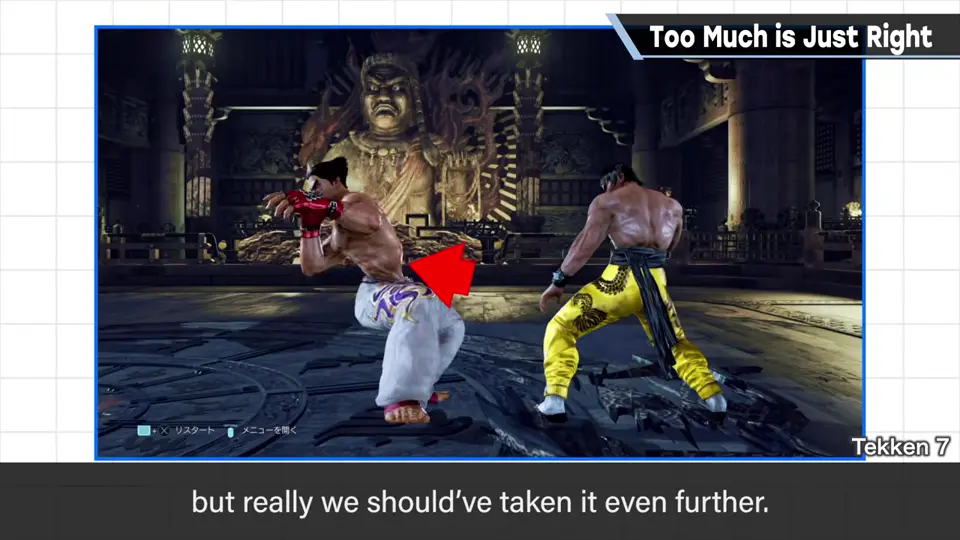
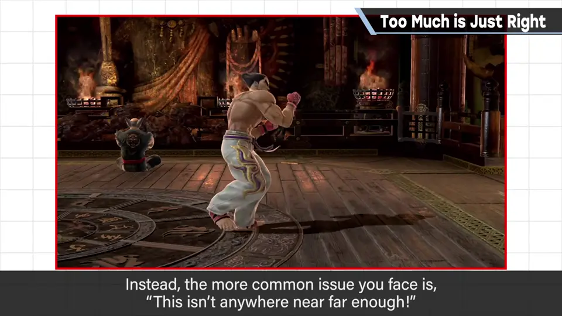
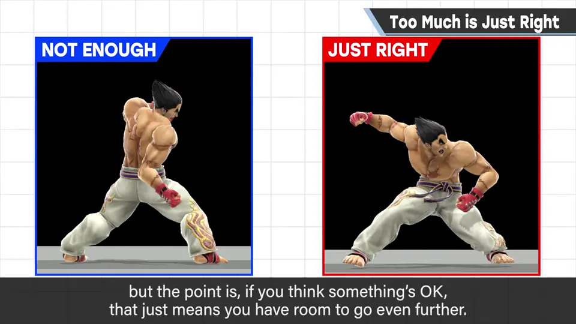
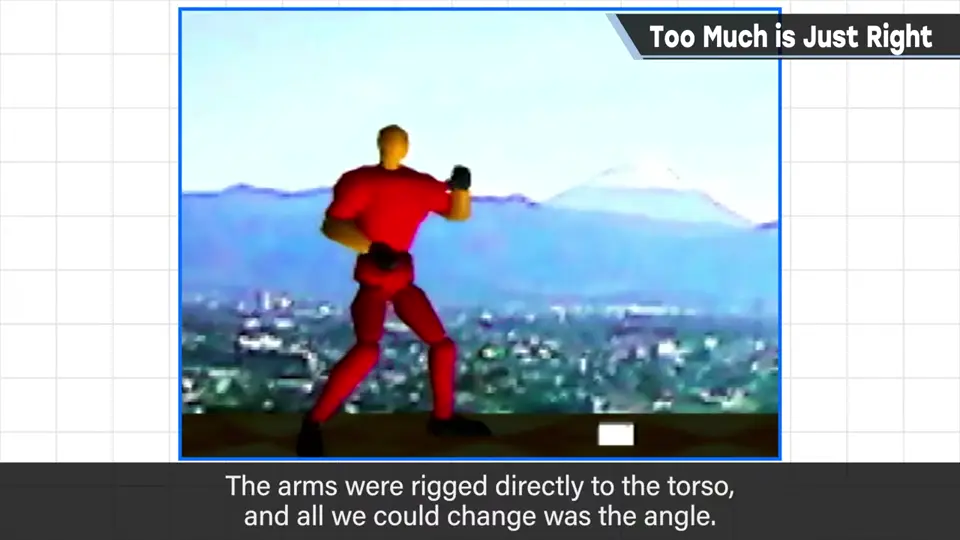
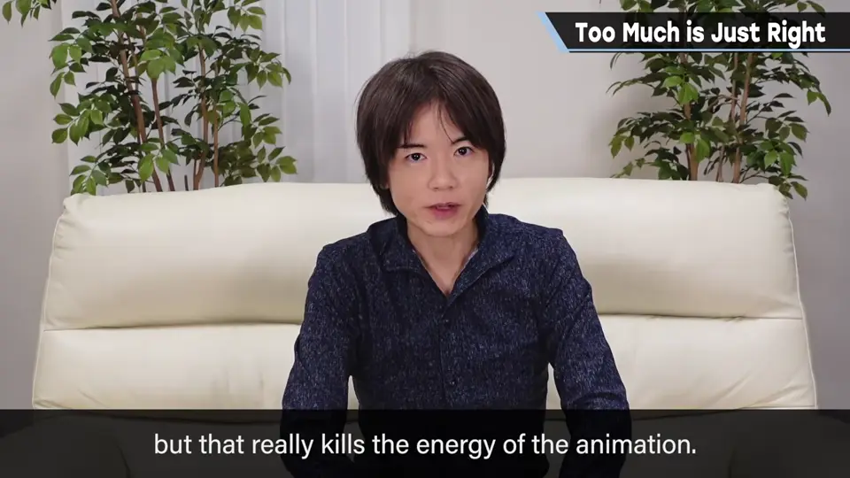
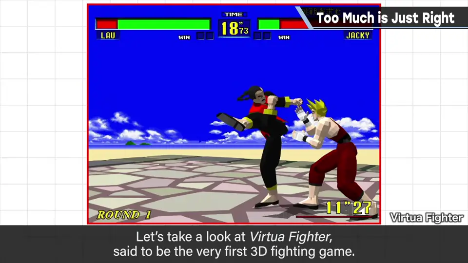
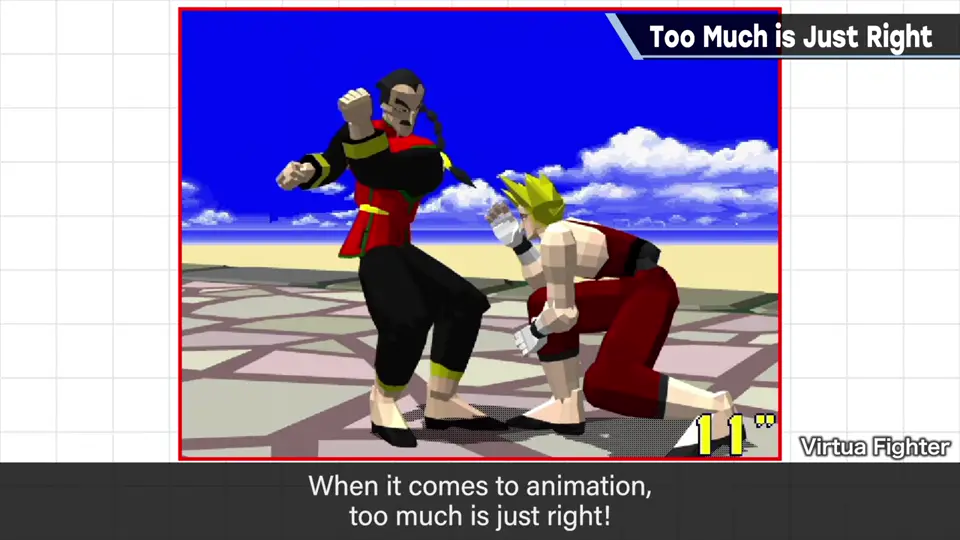
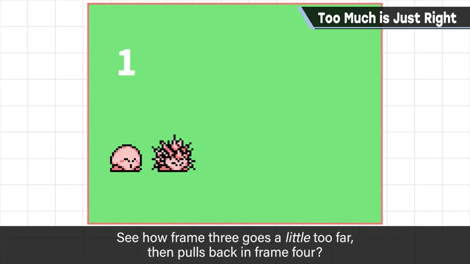

速览
看看一八螺旋幻魔脚这腰部扭转。别嚷嚷「不行、是 bug」：扭到模型权重破绽这么极端的动作，是好动作。原作也是这样所以 OK，但其实应该做得更过头。做攻击动作时，几乎没有「做过头」；反而「完全不够」是家常便饭。反正是小画面上的小动作，同样的攻击要大幅做过头才刚好：上勾拳这程度不够，要这么多（为方便用别的招说明）。比自己认为 OK 的再夸张地动，才刚好。初代《大乱斗》和格斗游戏《龙王》制作时，骨骼构成是躯干和上臂连在一起，只能改角度，位置不偏；而人类例如能前后移动肩膀根部，所以当时做不出足够的动作。现在诀窍积累、工具进化，柔软度高了很多。也有人因为在乎模型停下来时的破绽而另行修正，但那会扼杀势头。看看被称为首个 3D 格斗游戏的《VR 战士》：当时完成度就很高，也有上下半身几乎朝相反方向的动作。可动范围合乎道理并不等于好——请把「动作过头才刚好」刻进脑子里。另外，直线运动中冲过头再稍微回来也有效，红白机时代就在用：《星之卡比 梦之泉物语》针刺能力，从 3 号图到 4 号图时，冲过头再回来的样子看得很清楚。
1. 扭到破绽的好动作 0:04
看看一八螺旋幻魔脚这腰部的扭转。请别嚷嚷「不行，这是 bug」。


原作也是这样，所以就当 OK 推进了；但其实应该做得更更过头。
2. 几乎不存在「过头」 0:33
做攻击动作时，几乎没有「这做过头了」的情况；反而「完全不够」才是家常便饭。


上勾拳这个程度不够，要这么多（为方便用别的招说明）。比自己认为 OK 的再夸张地动，才刚好。
3. 骨骼的进化 1:10
初代《大乱斗》和格斗游戏《龙王》制作时，骨骼构成是躯干与上臂连在一起，只能改变角度——也就是位置不会偏。


但人类例如可以前后移动肩膀根部。所以当时无法做出足够的动作。现在诀窍积累、工具也进化了，能做到柔软得多。
也有人因为在意模型停下来时的破绽而另行修正，但那会扼杀动作的势头。
4. 《VR 战士》 1:55
看看被称为首个 3D 格斗游戏的《VR 战士》：当时动作完成度就很高，也有上半身和下半身几乎朝相反方向的动作。


5. 冲过头再回来 2:15
另外，直线运动中冲过头再稍微回来也很有效，红白机时代就在用了。

《星之卡比 梦之泉物语》的针刺能力：从 3 号图到 4 号图时，冲过头再回来的样子看得很清楚。
自测题
1. 樱井如何看待「扭到模型破绽」的动作？
是好动作；攻击动作几乎不存在过头，反而常常不够。 0:15
2. 为什么攻击动作要做过头？
小画面上的小动作，比自己认为 OK 的再夸张才刚好。 0:45
3. 直线运动有什么技巧？
冲过头再稍微回来（如卡比针刺的第 3→4 帧）。 2:20